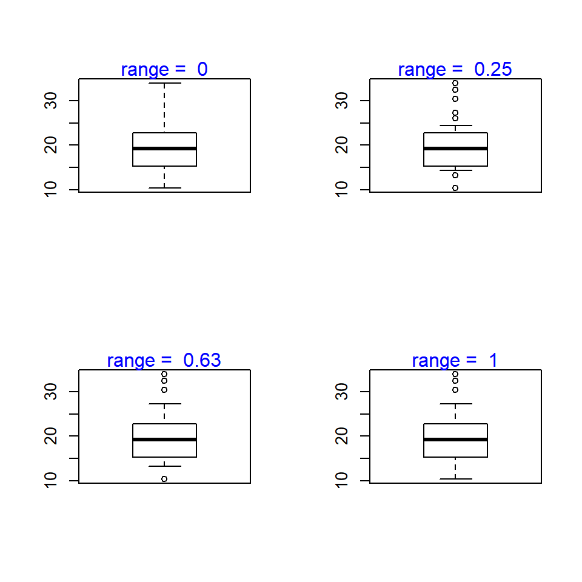

The box plot is a standardized way of displaying the distribution of data based on the five number summary: minimum, first quartile, median, third quartile, and maximum. Box plots are useful for detecting outliers and for comparing distributions. It shows the shape, central tendancy and variability of the data.
To create a boxplot, we use the boxplot() function. For example, to create a box plot of mpg from mtcars, this is how your code would look like:
boxplot(mtcars$mpg)boxplot() function to disp variable from mtcars# box plot of dispboxplot(mtcars$mpg)To change the direction of the box plot, use the horizontal argument. For example, to change the direction of the plot from the previous section, set the value of the horizontal argument to TRUE:
# horizontal box plot
boxplot(mtcars$mpg, horizontal = TRUE)boxplot() function to disp variable from mtcarshorizontal# horizontal box plot# horizontal box plot
boxplot(mtcars$disp, horizontal = TRUE)The default color of the box plot in R is white. Let us add some color to the box plot using the col argument.
# modify box color
boxplot(mtcars$mpg, col = 'blue')boxplot() function to disp variable from mtcarscol argument to red to modify plot color# modify box colorboxplot(mtcars$disp, col = 'red')Range this determines how far the plot whiskers extend out from the box. If range is positive, the whiskers extend to the most extreme data point which is no more than range times the interquartile range from the box. A value of zero causes the whiskers to extend to the data extremes.

boxplot() function to disp variable from mtcarsrange argument to 0 and run the coderange to 1 and obverve the changes# range# range
boxplot(mtcars$disp, range = 0)
boxplot(mtcars$disp, range = 1)